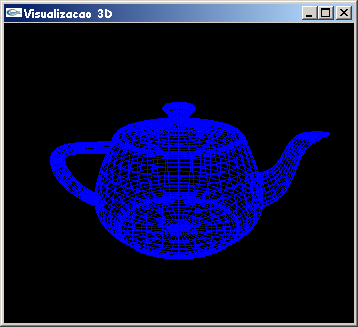

|
Introdução à OpenGL Professora Isabel Harb Manssour |
||
|
14. Programando em 3DOs exemplos apresentados até aqui mostraram apenas desenhos 2D. Este capítulo descreve como trabalhar em 3D usando OpenGL. As bibliotecas GLU e GLUT possuem uma série de funções para desenhar primitivas 3D, tais como esferas, cones, cilindros e teapot. Em 3D se assume que o processo utilizado para visualizar uma determinada cena é análogo a tirar uma fotografia com uma máquina fotográfica, o que inclui, segundo [Woo 1999], os seguintes passos:
O exemplo abaixo exemplifica a utilização das funções OpenGL para visualização 3D. // TeaPot3D.c - Isabel H. Manssour
// Um programa OpenGL que exemplifica a visualização
// de objetos 3D.
// Este código está baseado nos exemplos disponíveis no livro
// "OpenGL SuperBible", 2nd Edition, de Richard S. e Wright Jr.
#include <gl/glut.h>
GLfloat angle, fAspect;
// Função callback chamada para fazer o desenho
void Desenha(void)
{
glClear(GL_COLOR_BUFFER_BIT);
glColor3f(0.0f, 0.0f, 1.0f);
// Desenha o teapot com a cor corrente (wire-frame)
glutWireTeapot(50.0f);
// Executa os comandos OpenGL
glutSwapBuffers();
}
// Inicializa parâmetros de rendering
void Inicializa (void)
{
glClearColor(0.0f, 0.0f, 0.0f, 1.0f);
angle=45;
}
// Função usada para especificar o volume de visualização
void EspecificaParametrosVisualizacao(void)
{
// Especifica sistema de coordenadas de projeção
glMatrixMode(GL_PROJECTION);
// Inicializa sistema de coordenadas de projeção
glLoadIdentity();
// Especifica a projeção perspectiva
gluPerspective(angle,fAspect,0.1,500);
// Especifica sistema de coordenadas do modelo
glMatrixMode(GL_MODELVIEW);
// Inicializa sistema de coordenadas do modelo
glLoadIdentity();
// Especifica posição do observador e do alvo
gluLookAt(0,80,200, 0,0,0, 0,1,0);
}
// Função callback chamada quando o tamanho da janela é alterado
void AlteraTamanhoJanela(GLsizei w, GLsizei h)
{
// Para previnir uma divisão por zero
if ( h == 0 ) h = 1;
// Especifica o tamanho da viewport
glViewport(0, 0, w, h);
// Calcula a correção de aspecto
fAspect = (GLfloat)w/(GLfloat)h;
EspecificaParametrosVisualizacao();
}
// Função callback chamada para gerenciar eventos do mouse
void GerenciaMouse(int button, int state, int x, int y)
{
if (button == GLUT_LEFT_BUTTON)
if (state == GLUT_DOWN) { // Zoom-in
if (angle >= 10) angle -= 5;
}
if (button == GLUT_RIGHT_BUTTON)
if (state == GLUT_DOWN) { // Zoom-out
if (angle <= 130) angle += 5;
}
EspecificaParametrosVisualizacao();
glutPostRedisplay();
}
// Programa Principal
int main(void)
{
glutInitDisplayMode(GLUT_DOUBLE | GLUT_RGB);
glutInitWindowSize(350,300);
glutCreateWindow("Visualizacao 3D");
glutDisplayFunc(Desenha);
glutReshapeFunc(AlteraTamanhoJanela);
glutMouseFunc(GerenciaMouse);
Inicializa();
glutMainLoop();
}
Obs.: Clique aqui para fazer o download deste programa. O programa apresentado acima, como mostra a figura 14.1, apenas exibe um teapot (ou bule de chá) azul, no formato wire-frame, numa janela com fundo preto. Ao posicionar o mouse sobre a janela e clicar com o botão esquerdo e direito, é possível obter zoom-in e zoom-out, respectivamente. As novas funções utilizadas neste exemplo são descritas a seguir.  Figura 14.1 - Saída do programa TeaPot3D.c
Assim como o teapot, a biblioteca GLUT também possui
funções para desenhar outros objetos 3D. Estas funções estão listadas abaixo [Woo 1999]:
Todas estas funções também podem ser usadas para desenhar objetos sólidos, ao invés de exibir apenas o seu wire-frame. Para isto, basta substituir a substring Wire do nome da função por Solid. Por exemplo, se substituirmos a chamada à função glutWireTeapot(50.0f) por glutSolidTeapot(50.0f) a imagem gerada é a apresentada na figura 14.4. Figura 14.4 - Teapot gerado usando a função glutSolidTeapot Olhando a figura 14.4 é possível observar que a imagem gerada parece 2D. Isto ocorre porque a versão Solid deve ser usada somente quando se está trabalhando com iluminação (veja o próximo capítulo deste tutorial).
|
Última alteração em 27 de março de 2003.